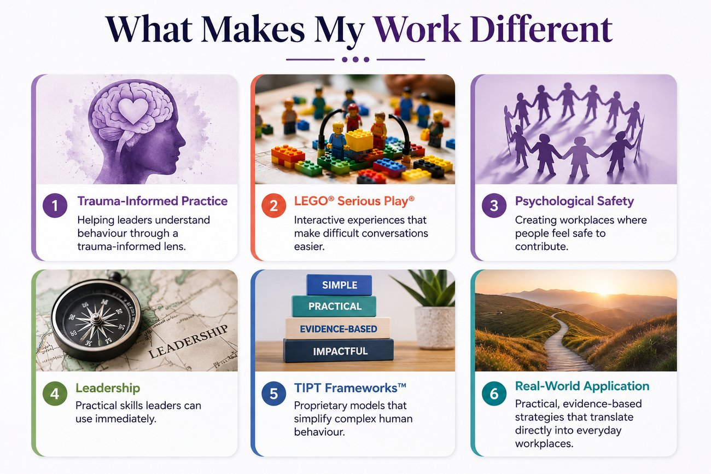
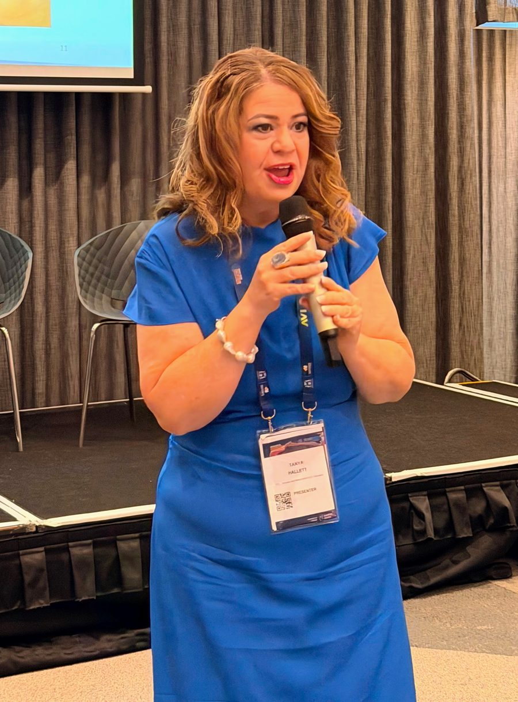

Meet Tanya Hallett
Tanya Hallett is an award-winning trauma-informed practice specialist, keynote speaker and educator dedicated to helping organisations create workplaces where people feel safe to contribute, collaborate and thrive.
With more than 20 years' experience as an educator and facilitator, Tanya has spent her career translating complex human behaviour into practical strategies that leaders can immediately apply. Her work sits at the intersection of trauma-informed practice, psychological safety, leadership and organisational capability.
As the founder and CEO of TIPT (Trauma-Informed Practice Training and Advisory), Tanya has worked with government agencies, financial institutions, universities, defence organisations, community services, healthcare providers and private industry to strengthen leadership capability, improve psychologically safe workplaces and support teams exposed to high levels of stress, trauma and emotionally demanding work.
Tanya is an accredited Mental Health First Aid Instructor, a certified LEGO® Serious Play® Facilitator, and the creator of multiple proprietary TIPT Frameworks™, including the TIPT Third Space Framework™, TIPT CARE Framework™ and TIPT Trauma-Informed Framework™. These evidence-informed frameworks provide organisations with practical tools to improve leadership, communication, psychosocial safety and workplace culture.
What makes Tanya's work different
Tanya is one of a small number of trauma-informed practitioners in Australia who is also accredited as a LEGO® Serious Play® Facilitator, a combination that turns abstract ideas like psychological safety into something people build, discuss and physically see, rather than simply hear about.

It's this blend of clinical-grade trauma-informed knowledge, facilitation craft and a genuinely interactive method that leaders describe as the difference between a keynote people enjoy and one that actually changes how their team works together.

How Tanya works
What makes Tanya's work different is her belief that people rarely change because they are given more information. They change when they experience new ways of thinking.
People change through experience, not information
Every keynote, workshop and leadership program is designed to be highly interactive, combining evidence-based research, storytelling, reflection and LEGO® Serious Play® to help participants think differently, speak more openly and leave with practical actions they can immediately apply.
Trauma-informed practice is about understanding people
Tanya believes trauma-informed practice is not about treating trauma. It is about understanding people. It is about creating workplaces where trust is strengthened, difficult conversations become possible, and leaders know how to respond in ways that build confidence rather than fear.
Safety is what makes performance possible
Her mission is simple: to help organisations build psychologically safe workplaces where people can perform at their best because they feel safe enough to bring their whole selves to work.
See how this philosophy becomes a working model.
The TIPT Framework Collection™ translates these commitments into practical, evidence-informed tools.